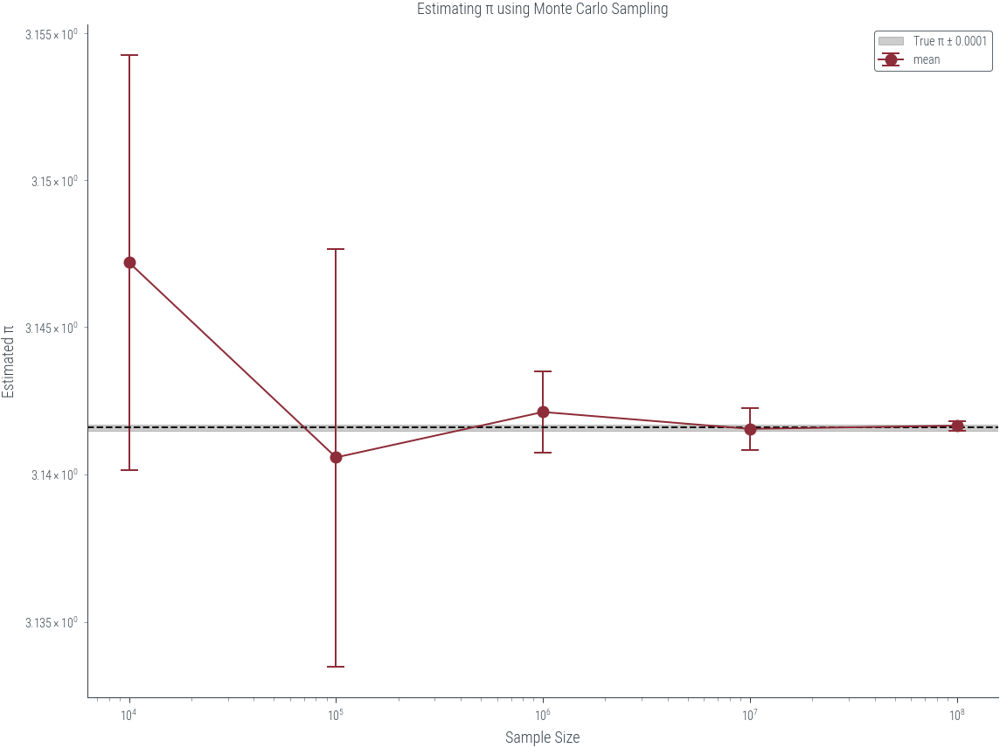

import torch
import numpy as np
import matplotlib.pyplot as plt
import pandas as pd
import matplotlib.pyplot as plt
import seaborn as sns
%matplotlib inline
# Retina display
%config InlineBackend.figure_format = 'retina'
import warnings
warnings.filterwarnings('ignore')from tueplots import bundles
plt.rcParams.update(bundles.beamer_moml())
# Also add despine to the bundle using rcParams
plt.rcParams['axes.spines.right'] = False
plt.rcParams['axes.spines.top'] = False
# Increase font size to match Beamer template
plt.rcParams['font.size'] = 16
# Make background transparent
plt.rcParams['figure.facecolor'] = 'none'true_pi = torch.pi
true_pi3.141592653589793import torch
import torch.distributions as dist
def estimate_pi(N, seed):
torch.manual_seed(seed)
xy = torch.rand(N, 2) # Generate N random points in [0, 1] × [0, 1]
distance = torch.sqrt(xy[:, 0]**2 + xy[:, 1]**2) # Calculate distance from the origin
inside_circle = distance <= 1.0 # Check if point falls inside the quarter circle
points_inside = torch.sum(inside_circle).item() # Count points inside the quarter circle
pi_estimate = (points_inside / N) * 4.0 # Calculate the π estimate
return pi_estimateN = 10000
seed = 42
torch.manual_seed(seed)
xy = torch.rand(N, 2)
x1 = xy[:, 0]
x2 = xy[:, 1]
distances = torch.sqrt(x1**2 + x2**2)
c = distances <= 1.0
plt.scatter(x1, x2, c = c.float())
plt.gca().set_aspect('equal')
plt.title((c.sum().item()/N)*4)Text(0.5, 1.0, '3.1464')# Different random seeds and sample sizes
random_seeds = [0, 1, 2, 3, 4, 5]
log_sample_sizes = [1, 2, 3, 4, 5, 6, 7, 8]
sample_sizes = [10**i for i in log_sample_sizes]
pi_estimates = []
for seed in random_seeds:
for N in sample_sizes:
pi_estimate = estimate_pi(N, seed)
pi_estimates.append((seed, N, pi_estimate))
| seed | N | pi_estimate | |
|---|---|---|---|
| 0 | 0 | 10 | 3.200000 |
| 1 | 0 | 100 | 3.200000 |
| 2 | 0 | 1000 | 3.140000 |
| 3 | 0 | 10000 | 3.139200 |
| 4 | 0 | 100000 | 3.137200 |
| 5 | 0 | 1000000 | 3.140544 |
| 6 | 0 | 10000000 | 3.141136 |
| 7 | 0 | 100000000 | 3.141476 |
| 8 | 1 | 10 | 3.600000 |
| 9 | 1 | 100 | 2.880000 |
# Create a Pandas DataFrame from the list of tuples
df = pd.DataFrame(pi_estimates, columns=["seed", "N", "pi_estimate"])
df.head(20)| seed | N | pi_estimate | |
|---|---|---|---|
| 0 | 0 | 10 | 3.200000 |
| 1 | 0 | 100 | 3.200000 |
| 2 | 0 | 1000 | 3.140000 |
| 3 | 0 | 10000 | 3.139200 |
| 4 | 0 | 100000 | 3.137200 |
| 5 | 0 | 1000000 | 3.140544 |
| 6 | 0 | 10000000 | 3.141136 |
| 7 | 0 | 100000000 | 3.141476 |
| 8 | 1 | 10 | 3.600000 |
| 9 | 1 | 100 | 2.880000 |
| 10 | 1 | 1000 | 3.096000 |
| 11 | 1 | 10000 | 3.144000 |
| 12 | 1 | 100000 | 3.139640 |
| 13 | 1 | 1000000 | 3.143724 |
| 14 | 1 | 10000000 | 3.142105 |
| 15 | 1 | 100000000 | 3.141681 |
| 16 | 2 | 10 | 3.600000 |
| 17 | 2 | 100 | 3.120000 |
| 18 | 2 | 1000 | 3.140000 |
| 19 | 2 | 10000 | 3.144000 |
df_grouped = df.groupby("N").agg(["mean", "std"])["pi_estimate"]
df_grouped| mean | std | |
|---|---|---|
| N | ||
| 10 | 3.200000 | 0.357771 |
| 100 | 3.120000 | 0.153883 |
| 1000 | 3.147333 | 0.090099 |
| 10000 | 3.147200 | 0.007065 |
| 100000 | 3.140580 | 0.007081 |
| 1000000 | 3.142121 | 0.001377 |
| 10000000 | 3.141548 | 0.000712 |
| 100000000 | 3.141659 | 0.000162 |
# Plot the estimates using mean and standard deviation
plt.figure(figsize=(8, 6))
df_grouped["mean"].plot(yerr=df_grouped["std"], capsize=5, marker="o")
plt.axhline(true_pi, color="black", linestyle="--")
plt.xlabel("Sample Size")
plt.ylabel("Estimated π")
plt.title("Estimating π using Monte Carlo Sampling")
# log scale on x-axis
plt.xscale("log")findfont: Font family ['cursive'] not found. Falling back to DejaVu Sans.
findfont: Generic family 'cursive' not found because none of the following families were found: Apple Chancery, Textile, Zapf Chancery, Sand, Script MT, Felipa, Comic Neue, Comic Sans MS, cursive# Plot only 10^4 and higher
plt.figure(figsize=(8, 6))
subset = df_grouped.query("N >= 10**4")
subset["mean"].plot(yerr=subset["std"], capsize=5, marker="o")
plt.xlabel("Sample Size")
plt.ylabel("Estimated π")
plt.title("Estimating π using Monte Carlo Sampling")
# log scale on x-axis
plt.xscale("log")
plt.yscale("log")
plt.axhline(true_pi, color="black", linestyle="--")
# plot true_pi +- 0.0001
plt.axhspan(true_pi - 0.0001, true_pi + 0.0001, color="black", alpha=0.2, label="True π ± 0.0001")
plt.legend()<matplotlib.legend.Legend at 0x7f6b93cb3d90>